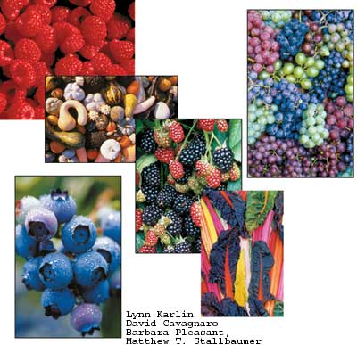

Left: Blueberries protect against heart and vascular disease. Right Bananas contain generous amounts of potassium, which helps regulate kidney functions and blood pressure, among other important bodily functions.